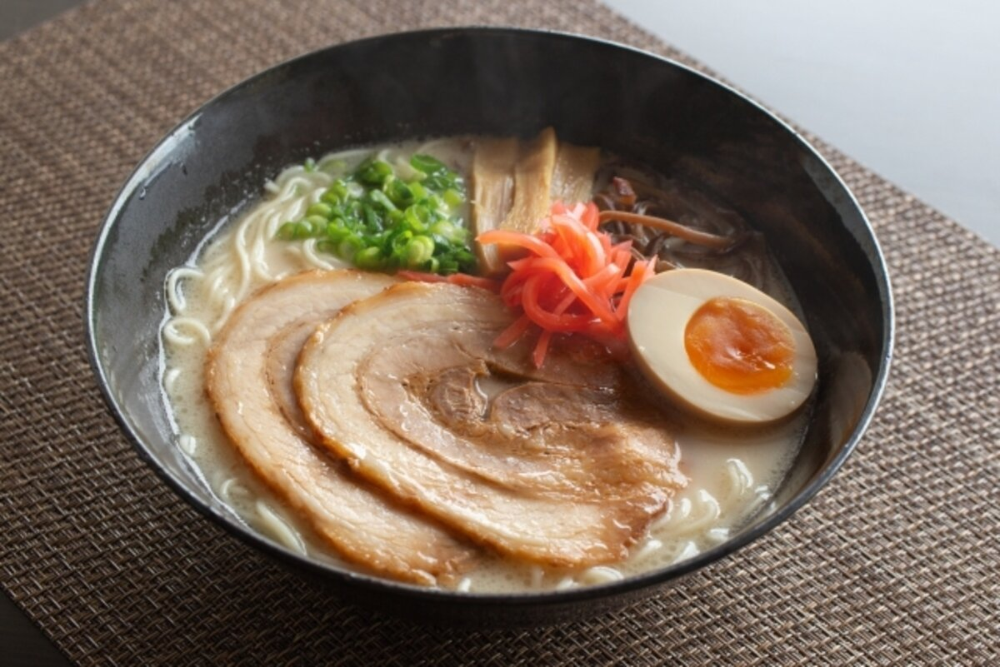
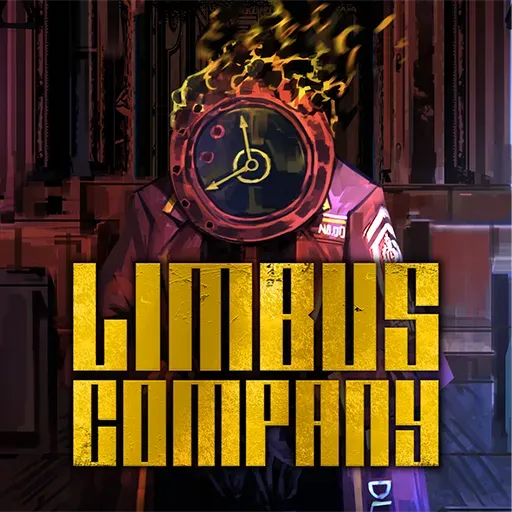

일식들을 정말정말 좋아하는데 규카츠나 타코야끼 보다 좋아하는것이 저 맛있어보이는 돈코츠 라멘입니다.
제가 평상시에 자주듣번 Mili라는 분의 노래이며 노래의 뜻이 고전 문학 "돈키호테"의 이야기를 담은 노래입니다.
해당노래의 링크 입니다.
이게임은 13의 고전문학 기반의 캐릭터들의 이야기를 풀어가면서 전투를 하는 수집형 RPG게임입니다.
| 제가 좋아하는 음식 | 제가 좋아하는 노래 | 제가 좋아하는 게임 |
 |
|
 |
| 저는 돈코츠 라멘을 좋아합니다. 일식들을 정말정말 좋아하는데 규카츠나 타코야끼 보다 좋아하는것이 저 맛있어보이는 돈코츠 라멘입니다. |
Mili 라는 작곡가분의 Hero 라는 노래입니다. 제가 평상시에 자주듣번 Mili라는 분의 노래이며 노래의 뜻이 고전 문학 "돈키호테"의 이야기를 담은 노래입니다. 해당노래의 링크 입니다. |
Project Moon에서 제작한 Limbus compnay라고 합니다. 이게임은 13의 고전문학 기반의 캐릭터들의 이야기를 풀어가면서 전투를 하는 수집형 RPG게임입니다. |